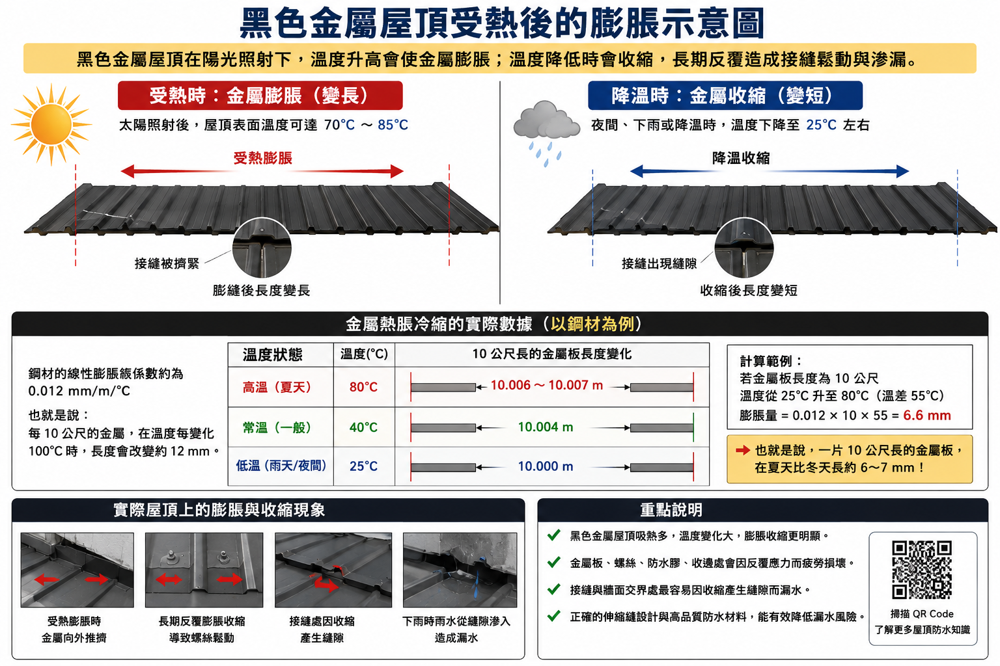
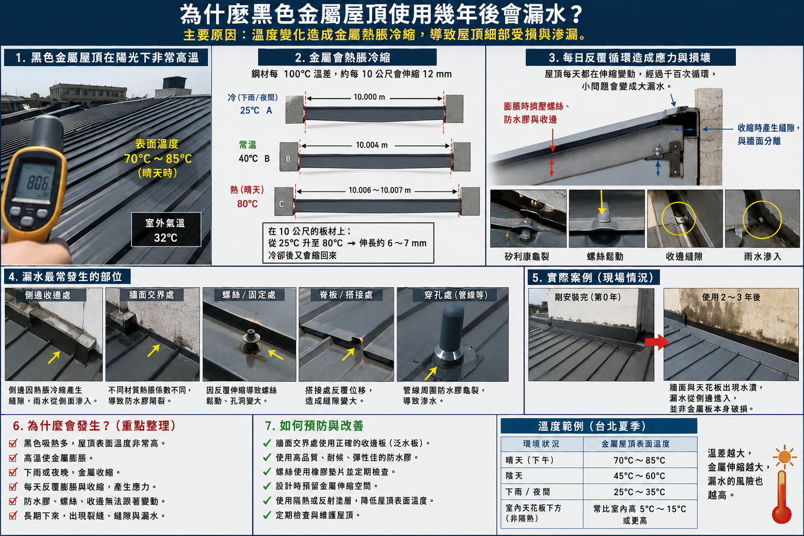
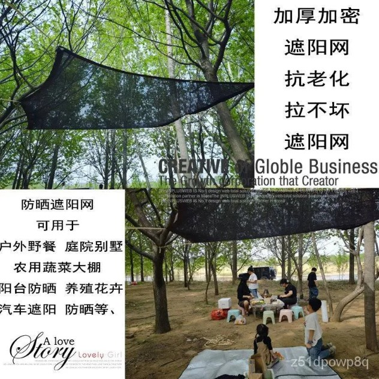
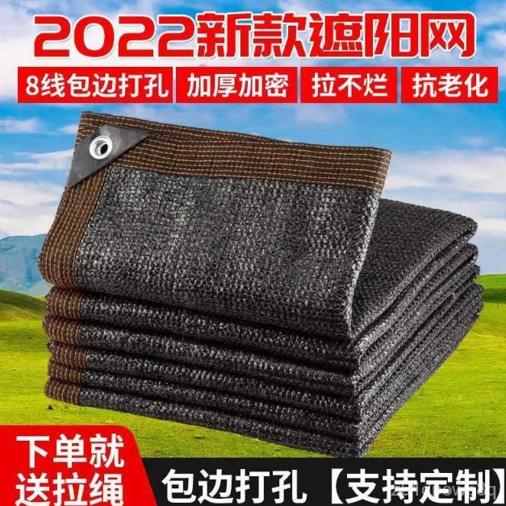
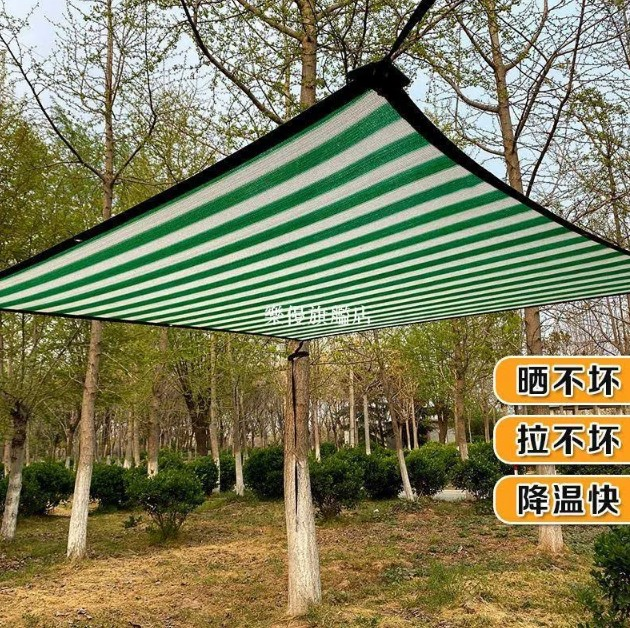
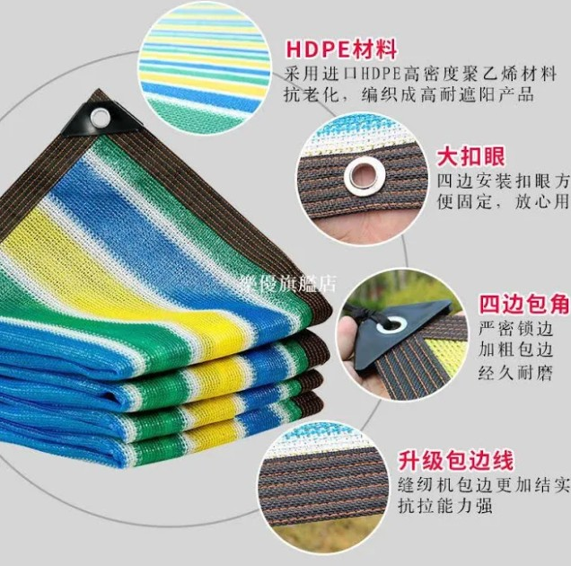
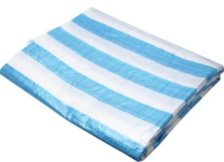

在台灣夏天，尤其是頂樓的黑色金屬鐵皮屋頂， 表面溫度在太陽直射下經常可以達到 70°C～85°C。 金屬每天都在高溫與降溫之間反覆伸縮， 長時間下來會造成螺絲鬆動、防水膠龜裂、 接縫變形與牆邊滲水。

黑色屋頂為什麼特別容易高溫？
黑色會吸收大量太陽熱能， 比白色或淺色屋頂更容易升溫。 台北夏天氣溫可能只有 35°C 左右， 但黑色鐵皮表面卻可能超過 80°C。
當屋頂溫度上升時， 金屬會膨脹變長； 下雨、晚上降溫時， 金屬又會收縮變短。

熱脹冷縮會造成什麼問題？
金屬每天都在反覆伸縮， 一年累積數千次循環後， 很容易造成屋頂細部老化。
- 螺絲鬆動
- 防水膠裂開
- 收邊縫隙變大
- 牆邊接縫產生裂縫
- 下雨時雨水滲入

很多鐵皮屋剛安裝時不會漏水， 但使用 2～5 年後， 開始從牆邊、收邊、螺絲孔附近滲水。

最便宜有效的改善方式
如果不想花很多錢重做屋頂， 最便宜有效的方法通常有兩種：
- 把黑色屋頂塗成白色或隔熱漆
- 在屋頂上方加一層遮陽布／帆布
白色可以反射太陽熱能， 大幅降低屋頂表面溫度， 減少金屬膨脹與收縮。

最簡單的方法：加裝遮陽帆布
現在很多人會使用 PP／PE 編織遮陽網、 防水帆布或 HDPE 遮陽布， 拉在鐵皮屋頂上方。
這種材料便宜、容易施工， 而且效果非常明顯。
重點不是直接蓋在鐵皮上， 而是：
- 在屋頂上方拉高一層
- 保留空氣流通空間
- 避免陽光直接照射鐵皮
這樣可以讓鐵皮溫度下降很多， 也能減少熱脹冷縮造成的漏水問題。

長期效果
當屋頂溫度降低後， 金屬伸縮幅度也會變小， 屋頂壽命通常能延長很多年。
同時還有幾個額外好處：
- 室內比較不熱
- 冷氣比較省電
- 減少天花板高溫
- 降低漏水風險
如果預算有限， 最推薦的方法通常是： 「白色隔熱漆 + 遮陽網／帆布」。 成本低、施工簡單、效果明顯。
